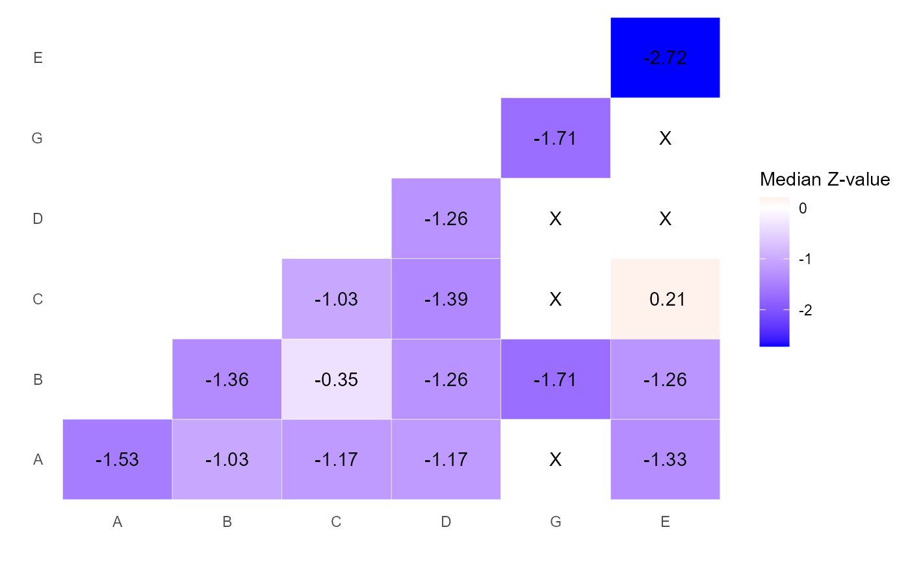

The function creates a heat plot based on the two-by-two component combinations, obtained from the network meta-analysis (NMA) model.
Usage
heatcomp(
model,
sep = "+",
median = TRUE,
random = TRUE,
z_value = TRUE,
legend_name = NULL
)Arguments
- model
An object of class
netmeta.- sep
A single character that defines the separator between interventions components.
- median
logical. IfTRUEthe median is used instead of the mean as a summary measure.- random
logical. IfTRUEthe random-effects NMA model is used instead of the fixed-effect NMA model.- z_value
logical. IfTRUEz-values are used instead of interventions effects.- legend_name
A single character that specifies the title of the legend.
Details
Diagonal elements refer to components, while off-diagonal to components combinations. Each element summarizes
the z-values (if z_value = TRUE) of the interventions that includes the corresponding
component combination. Combinations that were not observed in the NMA model, are
denoted by the letter "X". As a summary measure, the median is used by default (median = TRUE).
The magnitude of each z-score is reflected by the color's intensity. Estimates close to zero
are denoted by white color, while above and below zero are denoted by warm colors (such as red)
and cold colors (such as blue) respectively.
Intervention effects can be used instead of z-values by setting z_value = FALSE.
Also, by setting median = FALSE, the mean is used instead of the median as a summary measure.
Examples
data(MACE)
NMAdata <- netmeta::pairwise(
studlab = Study, treat = list(treat1, treat2, treat3, treat4),
n = list(n1, n2, n3, n4), event = list(event1, event2, event3, event4), data = MACE, sm = "OR"
)
net <- netmeta::netmeta(
TE = TE, seTE = seTE, studlab = studlab, treat1 = treat1,
treat2 = treat2, data = NMAdata, ref = "UC"
)
heatcomp(model = net)
